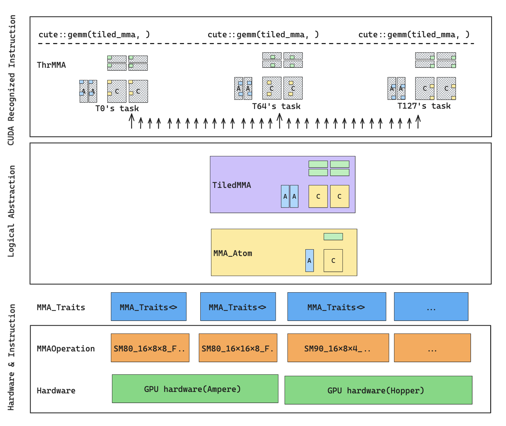
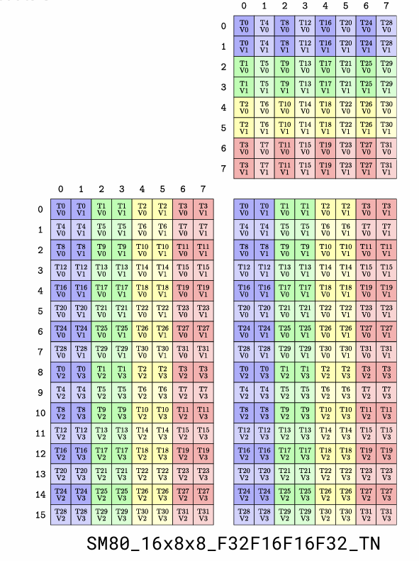
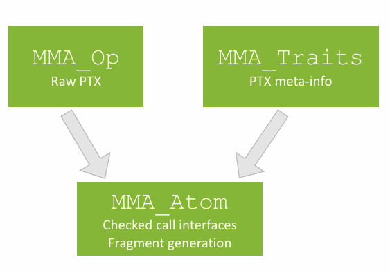
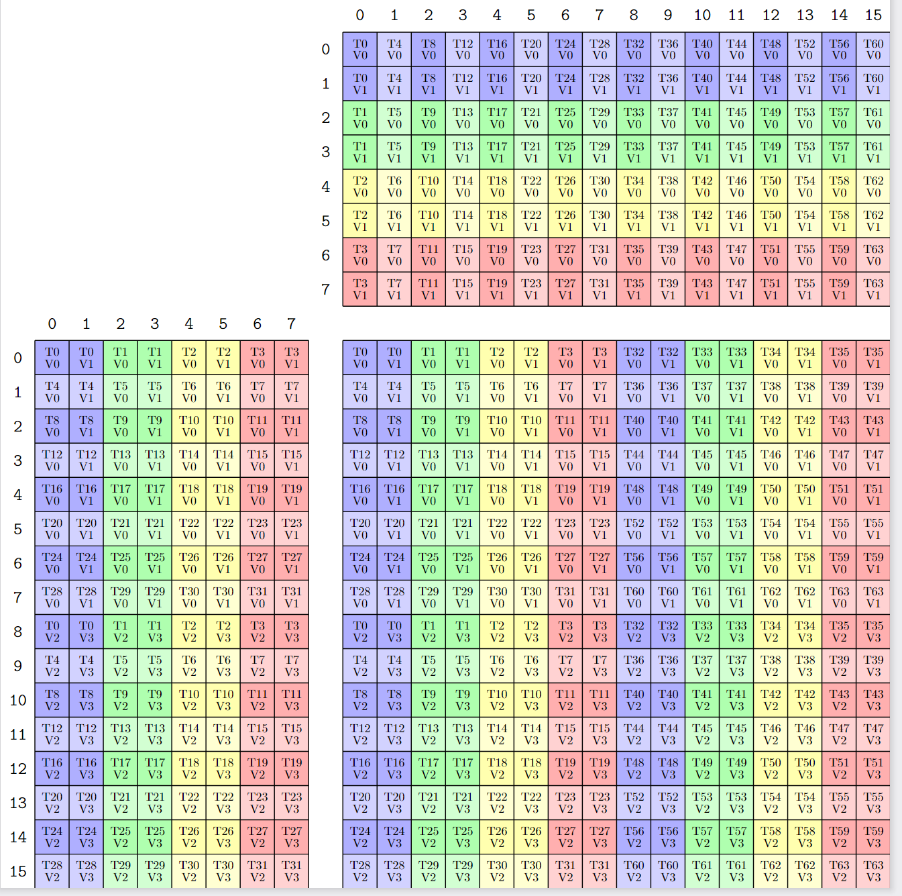

MMA Hierarchy
CuTe对MMA的抽象是自底向上的,大概可以分为三层。最底层是硬件指令层，包裹了架构特化的MMA PTX指令和从PTX提取的类型信息和fragment布局。中间层是逻辑抽象层，将矩阵形状映射到指令形状上，并为线程分工。顶层是gemm接口，处理循环调度和调用PTX指令。整体层次大概如下：

Source from https://zhuanlan.zhihu.com/p/663092747
MMAOperation：最底层的硬件指令包装，定义寄存器数量和真正的PTX指令调用。MMA_Traits<MMAOperation>：类型萃取层，告诉CuTe这个MMA指令的输入输出类型、M/N/K形状、线程和值的布局。MMA_Atom：给定硬件架构下的一次最小MMA计算单元。TiledMMA：把一个MMA_Atom映射到更大的M/N/K tile，并描述线程如何覆盖这个大tile。ThrMMA：某一个具体线程看到的MMA视图，负责切出该线程自己的A/B/C fragment。cute::gemm：最终执行入口，根据Tensor rank逐层dispatch，最后落到mma_atom.call()。
本文使用Ampere的SM80_16x8x16_F32F16F16F32_TN作为主例子介绍CuTe MMA各抽象层级，使用Ampere架构介绍是因为其相对简单直接，而且兼容Ampere架构的卡相对好找(RTX 30及之后，A100，L40 etc.)，后面会有文章介绍Hopper上的GMMA和Blackwell上的UMMA。
MMAOperation
MMAOperation是最靠近硬件的一层。它包装了特定架构上的一条或一组底层MMA PTX指令。
1// source from include/cute/arch/mma_sm80.hpp
2struct SM80_16x8x8_F32F16F16F32_TN
3{
4 using DRegisters = float[4];
5 using ARegisters = uint32_t[2];
6 using BRegisters = uint32_t[1];
7 using CRegisters = float[4];
8
9 CUTE_HOST_DEVICE static void
10 fma(float & d0, float & d1, float & d2, float & d3,
11 uint32_t const& a0, uint32_t const& a1,
12 uint32_t const& b0,
13 float const & c0, float const & c1, float const & c2, float const & c3)
14 {
15#if defined(CUTE_ARCH_MMA_SM80_ENABLED)
16 asm volatile(
17 "mma.sync.aligned.m16n8k8.row.col.f32.f16.f16.f32 "
18 "{%0, %1, %2, %3},"
19 "{%4, %5},"
20 "{%6},"
21 "{%7, %8, %9, %10};\n"
22 : "=f"(d0), "=f"(d1), "=f"(d2), "=f"(d3)
23 : "r"(a0), "r"(a1),
24 "r"(b0),
25 "f"(c0), "f"(c1), "f"(c2), "f"(c3));
26#endif
27 }
28};

MMAOperation内部包含了两个信息：需要的的寄存器数量，和执行计算的PTX指令。
寄存器数量使用别名声明。比如，一次m16n8k8的F16 MMA F32 ACC在每个参与线程上，D需要4个float寄存器，A需要2个32-bit寄存器，B需要1个32-bit寄存器，C需要4个float寄存器。注意这里的寄存器类型是uint32_t，并不是half_t。原因是PTX MMA指令的操作数通常以寄存器打包形式传入(32-bit)，CuTe会在mma unpack层处理逻辑元素类型和寄存器类型之间的关系。
这里使用的数据类型还可能有很多种。
- f16/bf16/int8/fp8/nvfp4等低精度类型会被打包进
uint32_t。 - 累加器如果是 f32，就直接使用 float。
- 64-bit 通常用于描述符、地址、或更宽 operand。在 Hopper/Blackwell 的 GMMA/WGMMA 路径里，A/B 有时不是普通操作数，而是 shared-memory descriptor。这类 operand 使用
uint64_t。还有double会使用uint64_t。 - 使用Blackwell TMEM的累加器D使用void，C使用TMEM的目标地址，这一部分会在之后的SM100 tcgen05里面再提及。
MMAOperation只暴露PTX指令需要的寄存器数量和PTX指令。其他更复杂的元信息由Traits提取。
MMA_Traits
C++里的Traits是一种类型萃取系统。它的作用是：给定一个类型，萃取出这个类型关联的一组信息。
在MMAOperation上面再定义一层Traits是为了维护接口的一致性，MMAOperation里面无法包含如此多架构特化的信息（比如SM90引入了TMA，SM80里面不需要这个信息，类似的特殊信息还有很多），所以CuTe引入了MMA_Traits来定义这个MMA操作的所有元信息。
以SM80_16x8x8_F32F16F16F32_TN为例，MMA traits会萃取以下信息
1template <>
2struct MMA_Traits<SM80_16x8x8_F32F16F16F32_TN>
3{
4//ValType
5using ElementDVal = float;
6using ElementAVal = half_t;
7using ElementBVal = half_t;
8using ElementCVal = float;
9//MMA Atom Shape
10using Shape_MNK = Shape<_16,_8,_8>;
11//Thread Layout
12using ThrID = Layout<_32>;
13//Thread-Value Layout
14// (T32,V4) -> (M16,K8)
15using ALayout = Layout<Shape <Shape < _4,_8>,_1>,
16Stride<Stride< _8,_1>,_0>>;
17// (T32,V2) -> (N8,K8)
18using BLayout = Layout<Shape <Shape < _4,_8>,_1>,
19Stride<Stride< _8,_1>,_0>>;
20// (T32,V4) -> (M16,N8)
21using CLayout = Layout<Shape <Shape < _4,_8>,_2>,
22Stride<Stride<_16,_1>,_8>>;
23};
ValType描述逻辑数据类型。对于这个例子，A/B是half_t，D/C是float。
Shape_MNK = Shape<_16,_8,_8>描述一次MMA指令的逻辑计算形状。
CuTe的形状表示和传统矩阵库之间差别很大。有关CuTe和BLAS的naming convention的可以参考 CuTe and BLAS naming convention
ThrID = Layout<_32>表示这个MMA Atom由32个线程参与，也就是一个warp。更准确地说，它描述逻辑线程id到硬件lane id的映射。对于SM80 warp-level MMA，这个映射是最简单的32线程布局。这里特别强调是因为SM90/100引入了GMMA/UMMA等需要多个Warp协同的MMA。
ALayout、BLayout、CLayout描述的是前面提到过的Thread-Value映射。它描述了每个线程持有哪一部分寄存器，这一部分工作在raw CUDA中是由cuda::wmma和fragment处理的，如果要手写PTX指令，这部分的对应关系将会是算术噩梦。CuTe通过已经包装好的TV映射帮我们处理了这点。有关这个映射是如何构建的可以参考 how to construct MMA atoms。这部分映射构建和ldmatrix的行为有很大关系，我们在Copy一章会继续讲解。
MMA_Atom
MMA_Atom继承了MMA_Traits。MMA_Atom包含了这个这条MMA指令的数据类型、M/N/K形状和fragment布局。MMA_Atom是做CuTe矩阵运算的最小单元，这也是其Atom名字的由来。

我们通过指定需要的PTX指令来构建MMA_Atom。
1using MmaAtom = MMA_Atom<SM80_16x8x8_F32F16F16F32_TN>;
MMA_Atom主要提供三类能力。
- 暴露traits中的类型信息：
1ValTypeD / ValTypeA / ValTypeB / ValTypeC
2Shape_MNK
3LayoutA_TV / LayoutB_TV / LayoutC_TV
- 创建fragment：make_fragment_A/B/C(…)
这些函数根据已经partition过的Tensor创建寄存器fragment。对于C fragment，通常会创建一个owning Tensor，用作累加器。对于A/B fragment，CuTe会根据traits中的FrgTypeA/B决定是创建值类型fragment，还是保留某种view。
这个接口最后会暴露给ThrMMA，在编程中我们调用的是ThrMMA中的make_fragment来创建持有mma数据的owning Tensor/nonowning Tensor。
- 真正调用MMA：call(D, A, B, C);
call()要求D/A/B/C都是rank-1 Tensor，因为到这一步时，它们已经是某个线程手里的寄存器fragment。随后CuTe会进入mma_unpack，把Tensor重新解释成MMAOperation需要的寄存器类型和数量，最终调用MMA_Op::fma。
这个接口会暴露给用户侧warpper cute::gemm，这是代码中执行MMA的入口。
Tiled MMA
MMA_Atom只描述一次硬件MMA指令。例如SM80的m16n8k16只计算一个16x8x16的小块。真实GEMM kernel中，一个warp或CTA通常要计算更大的tile。于是我们需要把多个MMA Atom组织起来，这就是TiledMMA。
TiledMMA同样定义在include/cute/atom/mma_atom.hpp。它继承自MMA_Atom，所以保留了所有类型别名。同时它增加了一组布局函数，用来描述大tile如何被多个atom和多个线程覆盖。
在CUTLASS 3.5的时候该接口有比较大的变化，本文以最新版接口为准。
1template <class MMA_Atom,
2 class AtomLayoutMNK,
3 class PermutationMNK = Tile<Underscore,Underscore,Underscore>>
4struct TiledMMA : MMA_Atom { ... }
我们组织更大MMA的方式有两种，一种是使用多个MMA_Atom拼成一个更大的MMA，即每个线程执行的工作量不变，增加线程的数量。另一种是只使用一个MMA_Atom重复多次，即线程数量不变，增加线程的工作量。
AtomLayoutMNK
AtomLayoutMNK描述MMA Atom在M/N/K方向上的重复方式。
1TiledMMA mmaC = make_tiled_mma(SM80_16x8x8_F32F16F16F32_TN{},
2 Layout<Shape<_1,_2,_1>>{}, // 1x2x1 MMA Atoms
3 Tile<X,X,X>{});

上面的Shape<_1,_2,_1>表示在M方向重复1次，在N方向重复2次，在K方向重复1次。因此整体MMA tile变成16x16x8，这表示我们组织两个MMA Atom，形成一个大的MMA。我们可以在图片中看到，我们一共引入了64个线程，每个线程处理4个元素。
Permutation
Permutations是该tiledMMA分别在MNK方向上的Tiler。What is PermutationMNK中详细讨论了Permutation，本文讲解会以此和代码实验为基础。
1TiledMMA mmaC = make_tiled_mma(SM80_16x8x8_F32F16F16F32_TN{},
2 Layout<Shape<_1,_1,_1>>{},
3 Tile<X,X,_16>{});

我们使用Tile<X,X,_16>去分别切割MNK。M维和N维使用X表示不变，我们想在K维要一个16的分片，这里会使用两个8扩展为16。我们可以在图片中看到MMA在K维度重复两次变为16，32个线程不变，每个线程处理8个元素。
get_slice()
TiledMMA还有一个关键接口：auto thr_mma = tiled_mma.get_slice(threadIdx.x);
get_slice()会把当前线程id映射到ThrLayoutVMNK中的一个坐标，然后返回一个ThrMMA。ThrMMA描述单个线程在这个覆盖关系中负责哪一部分，get_slice会根据 threadIdx.x选出这一部分。我们之后的Tensor创建都基于ThrMMA。
ThrMMA
ThrMMA是线程私有的MMA视图。它保存了当前线程在ThrLayoutVMNK中的坐标，并提供三个partition函数：partition_A/B/C(…)，它用来从整体tensor中选出当前线程处理的那块。这个结构非常重要，在后面GEMM walk through中会着重强调。
gemm
真正执行计算时，用户通常不会直接调用mma_atom.call()，而是调用：
1cute::gemm(tiled_mma, A, B, C);
2cute::gemm(tiled_mma, D, A, B, C);
cute::gemm定义在include/cute/algorithm/gemm.hpp。它不是一个单一实现，而是一组基于Tensor rank的dispatch。源码注释中把它分成五层：
11. (V) x (V) => (V)
22. (M) x (N) => (M,N)
33. (M,K) x (N,K) => (M,N)
44. (V,M) x (V,N) => (V,M,N)
55. (V,M,K) x (V,N,K) => (V,M,N)
Dispatch 1: (V) x (V) => (V)
这是最底层的vector fragment乘法。A、B、C、D都已经是一维fragment，也就是某个线程手里的寄存器数据。这个dispatch最终会直接调用：
1mma.call(D, A, B, C);
如果mma是MMA_Atom，这里最终落到Tensor Core MMA。如果是UniversalFMA，则会落到普通FMA。
Dispatch 2: (M) x (N) => (M,N)
这是向量外积。A是一维M向量，B是一维N向量，结果是M/N二维矩阵。CuTe会给它补一个K = 1的维度，然后转入Dispatch 3
1(M) x (N) <=> (M,1) x (N,1) => (M,N)
Dispatch 3: (M,K) x (N,K) => (M,N)
这是标准矩阵乘法的情况，CuTe会补上vector-mode V = 1，然后转入Dispatch 5。
1(M,K) x (N,K) => (M,N) <=> (1,M,K) x (1,N,K) => (1,M,N)
Dispatch 4: (V,M) x (V,N) => (V,M,N)
这是batched outer product。V表示每个线程持有的fragment value维度。CuTe会在M/N上循环，并对每个(m,n)调用Dispatch 1 (V) x (V) => (V)。
Dispatch 5: (V,M,K) x (V,N,K) => (V,M,N)
这是最完整的batched matrix product。它会沿K维循环：
1for (int k = 0; k < K; ++k) {
2 gemm(mma, D, A(_,_,k), B(_,_,k), C);
3}
每次固定一个K切片之后，问题就变成Dispatch 4：
1(V,M) x (V,N) => (V,M,N)
这也符合我们对矩阵乘法的直觉：K维是归约维度，M/N维是输出空间，V维是每个线程内部的fragment value维度。
当然，我们作为编程者，大可不必操心MMA到底是如何dispatch的，这就是CuTe MMA体系的最伟大之处，为我们封装了类似于wmma的高阶api，但给了我们更自由的形状和更细的粒度。
Wrap up
本文从底向上介绍了CuTe的MMA层级。
学习MMA Atom时最重要的直觉是：CuTe不是只封装了一条MMA指令，而是把“硬件寄存器接口、线程持有fragment的方式、大tile的线程分解、线程私有fragment视图、最终gemm dispatch”全部放进同一个类型系统中。
下一篇文章将进入GEMM walk through，把前面介绍过的Tensor、Layout Algebra、Copy和MMA连起来，看一个实际GEMM kernel中的数据如何从global memory流向shared memory、register和Tensor Core。
Reference
https://docs.nvidia.com/cutlass/latest/media/docs/cpp/cute/0t_mma_atom
https://zhuanlan.zhihu.com/p/663092747
https://www.cs.utexas.edu/~flame/BLISRetreat2023/slides/Thakkar_BLISRetreat2023.pdf